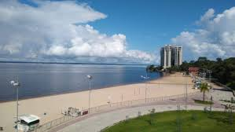
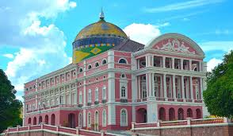
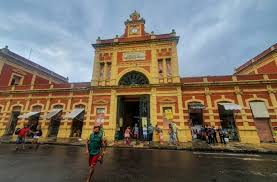

Pontos turísticos
Alguns dos principais pontos turísticos de Manaus são o Teatro Amazonas, o Encontro das Águas, o Mercado Adolpho Lisboa, a Feira Moderna de Manaus, a Praia da Ponta Negra, o Museu da Amazônia (MUSA) e o Museu do Seringal Vila Paraíso.Teatro Amazonas - O icônico teatro é ponto de visita obrigatória para qualquer fotógrafo em Manaus. Esta magnífica casa de ópera, construída no final do século XIX, é um exemplo impressionante da arquitetura europeia no coração da floresta amazônica. O exterior grandioso e os detalhes interiores intrincados proporcionam fotografias impressionantes.
Encontro das Águas - O ponto onde o escuro Rio Negro e o arenoso Rio Solimões convergem para formar o poderoso Rio Amazonas, é uma maravilha natural que você não deve perder. O forte contraste entre os dois rios cria uma oportunidade fotográfica única, especialmente durante o nascer ou o pôr do sol.
Mercado Municipal Adolpho Lisboa - Uma explosão de cores e cultura local. Esse movimentado mercado é um banquete para os sentidos, com fileiras de frutas coloridas, vegetais e artesanato. É um ótimo lugar para capturar a energia vibrante de Manaus e seu povo.


